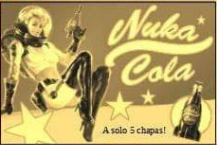
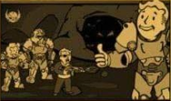
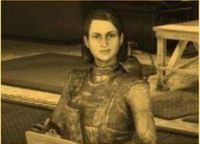
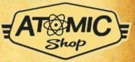
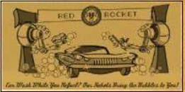
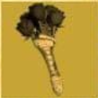

Llega el parche de Inventario
Este nuevo parche llega a Fallout 76
para ayudara organizar mejor
nuestro inventario entre otras cosas.
A continuación las novedades mas importantes:
Aumenta el alijo, de 800 a 12000.
Nuevas pestañas en el Pip-Boy,
ahora armaduras y atuendos están
por separado y comida y bebida están
separadas de ayuda, lo cual agilizará
mucho la búsqueda de nuestros objetos.
También se incorpora la pestaña "nuevo"
donde encontraremos los últimos items recogidos
la sesión actual en ordenados en el orden en el
que se recogen.
Nueva función "peso apilado" nos
muestra la el peso total de un item
que tengamos en cantidad (Tip:
atentos con los items de ayuda y
comida y bebida, que suelen ser
los que mas se acumulan sin darse cuenta!).

También encontraremos mejoras en
la interfaz de la vista en mapa de las
maquinas vendedoras de jugadores.
Ahora aparecen diferenciadas armas
y armaduras por cantidad de estrellas
legendarias, lo cual sin duda nos
ahorrará muchos viajes rápidos.

Operaciones Diarias
A partir de esta actualización al completar
una operación diaria alcanzando el rango de
"Maestre" se garantizará la obtención de al
menos un objeto de entre las recompensas
poco comunes.
Conocimiento Prohíbido
La conocida misión secundaria ha sido reactivada luego de haber solucionado los problemas con los datos técnicos. Y ahora no solo pueden depositarse en Campamento Aventura, también son recibidos en Fuerte Atlas por la escriba Odessa Valdez de la Hermandad del Acero, a quien vemos en la siguiente imagen.

Consejo diario: no olvides llevar siempre un poco de Rad-X por si te topas con una tormenta radiactiva;-)
Novedades Tienda Atómica
En la tienda atómica se ha añadido una opción para que muestre solo los ítems que no hemos comprado, para facilitar la navegación y mejorar la visualización.

Esta semana encontraremos las siguientes novedades:
Cámara de Habitaciones de Refugio 15000 átomos.
Conjunto de sofas modulares 500 átomos.
Servoarmadura de Ranger del Parque 1200 átomos.
Además de muchas ofertas entre las
que destacan los letreros de Quantum,
Old Possum y Pickaxe, Conjunto de bar
elegante, Conjunto de barra de Slocum's Joe,
entre otras.

Evento por tiempo limitado

No olvides reclamar la skin gratuita del
"Rompecorazones" para la Llave Grifa y
participar del evento "Muero de Amor".
donde deberás completar desafios diarios y semanales que otorgarán recompensas como tarteras, kits de reparación, sobres de "perks", y objetos de tiempo limitado (atuendo de RobCo, Bungaló rústico y Casco de pescador de langostas).